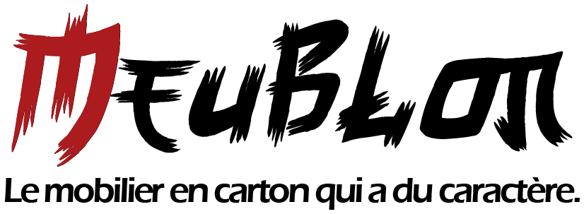
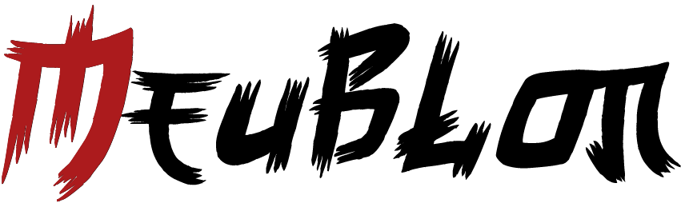
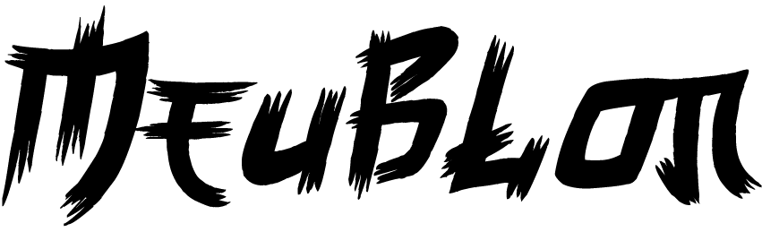
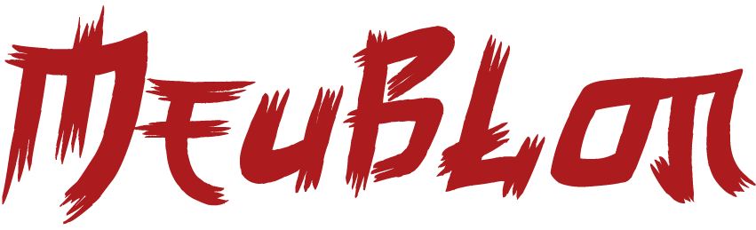
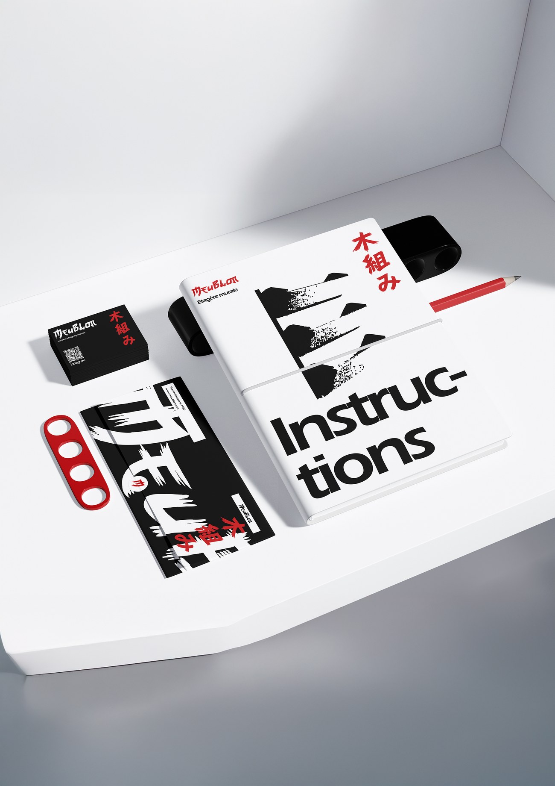
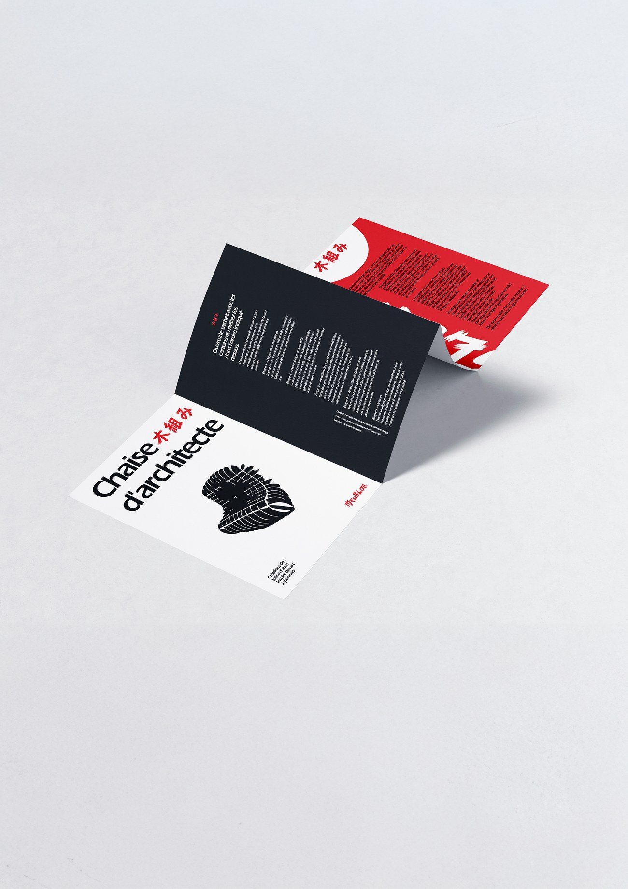
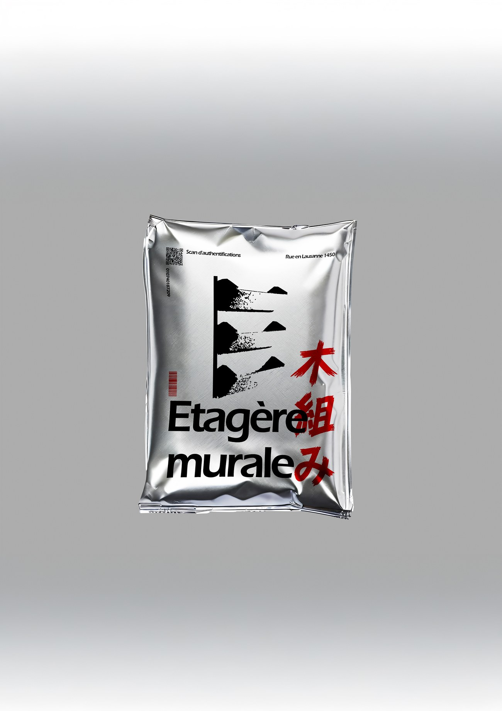
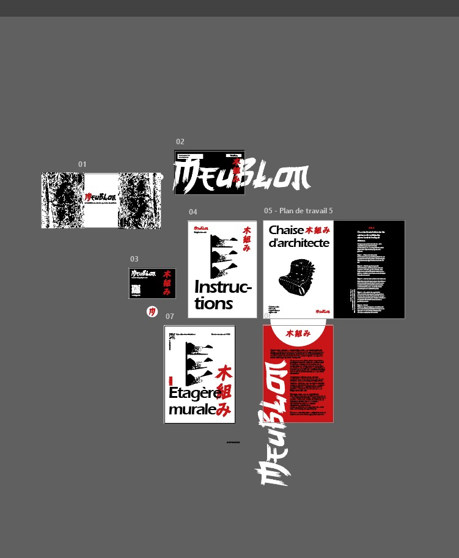

05 Identité de marque, projet personnel, sept. 2026
Meublon木組み
Une marque japonaise de mobilier en carton, inventée et bouclée en deux jours. Le nom dit déjà tout : meuble plus carton, Meublon. Le reste vient du kigumi, l'assemblage japonais qui tient sans vis ni colle.
Le kigumi d'abord, la marque ensuite
Le kigumi (木組み) est une technique d'assemblage japonaise où les pièces de bois s'emboîtent les unes dans les autres, sans clou ni colle. C'est elle qui a lancé le projet, pas l'inverse : j'ai trouvé le principe beau, j'ai voulu une marque autour. Transposé au carton, ça donne des meubles légers et recyclables, qui tiennent par leur seule découpe.
Les deux produits, l'étagère murale et la chaise d'architecte, sont inspirés de meubles en carton qui existent vraiment. Le brief, je me le suis donné tout seul : deux jours. Un pour créer tous les visuels, un pour filmer, monter et publier.
21 s · 9:16 · Premiere Pro · sans son
Ce projet a été pensé pour être présenté en vidéo. J'ai réalisé une identité complète comprenant le logo, la carte de visite, le livret d'instructions, le dépliant de la chaise et le packaging.
Comment allier le carton et le Japon ?
Le carton est le matériau le moins noble qui soit, et le Japon appelle tout de suite des images de raffinement. Les deux ne vont pas ensemble.
La réponse a été de traiter les meubles en carton comme un dessin à l'encre : un trait de pinceau brut, écorché, presque sale. À partir de là le matériau cesse d'être un handicap, il devient le sujet.
01 Le logotype
Un mot tracé au pinceau
Le logotype part d'une police de base, puis un gros travail de typographie sur Illustrator : chaque lettre reprise, cassée, effilée, jusqu'à obtenir ce tracé au pinceau.





02 Les pièces
Branding



Le sachet porte un QR code « Scan d'authentifications ». Rien d'anti-contrefaçon là-dedans, c'est un détail purement graphique, et il renvoie sur mon Instagram.
03 Le système
04 Le résultat
Avec peu, on peut faire beaucoup.
Deux jours, trois couleurs, un logotype et un plan de travail filmé. C'est ce que je retiens du projet : la contrainte de temps a forcé des décisions rapides, et le résultat tient debout.
Ce que je referais autrement : poser la musique directement dans Premiere Pro. Je l'ai ajoutée au moment de publier sur Instagram, donc le fichier d'origine est muet.

Le plan de travail complet, celui que la vidéo parcourt